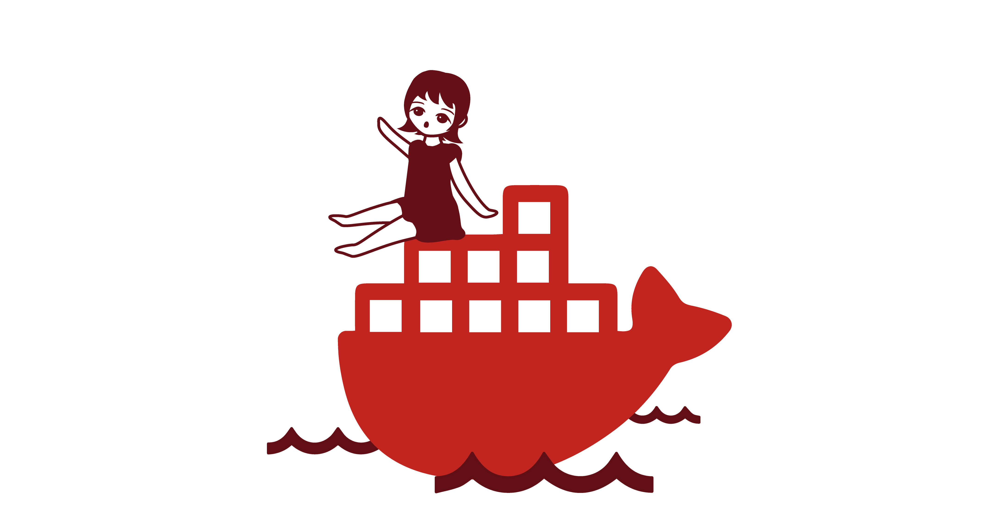

What We Do
facebook, twitter, LINE,
instagramに代表されるWebサービスの裏側の技術を体験、習得できます。
いろんなユーザのデータを繋げ合わせて価値のあるものに生まれ変わらせるコースです。
Leaders受講生の作品
"行ったお店" と "行きたいお店" をシェアできるレストランログ
Schoolメンバーの作品
コーディネートをシェアして、ユーザー同士でアドバイスを送りあえるSNS
Why We Do it
なぜ他のコースではなく、Webサービスコースなのか？そのメリットを紹介します。

WebサービスコースではDockerを運用しています。
今後世の中のメインストリームとなる最新の開発環境を学生のうちから体験、またコースの勉強会でその仕組みなど基礎から学ぶことができます。

このコースは難易度の高いコースですが、その分得られるものは１００倍です。
本気でぶつかってきてくれる人には本気で教えるので、思いがある人、ウェルカム!

そしてなにより！どこよりもバチいけな最高のコミュニティ、We:byがあります！
月に１回程度集まってハッカソンや勉強会など開催しています!
How We Do it
以下の技術を使用し、Webサービスを開発しています。幅広い知識が必要とされるため、基本的には中級者以上と案内していますが、幅広い技術を学ぶことができます。

Instructor
Webサービスコースの研修の講師
あみたん
Leaders 8th
自分が担当するメンバーをだれよりも幸せにし、メンバーの人生を変えるメンターを目指して、研修共にがんばりましょう。本気でぶつかってきてください。本気ですべてを教えます。
かいかい
Leaders 10th
Leadersの3ヶ月間を、研修生のみなさんの人生を変える3ヶ月にしてほしいな、と思います。メンバーひとりひとりに最高の体験を届けられるメンターを目指して共に頑張りましょう。